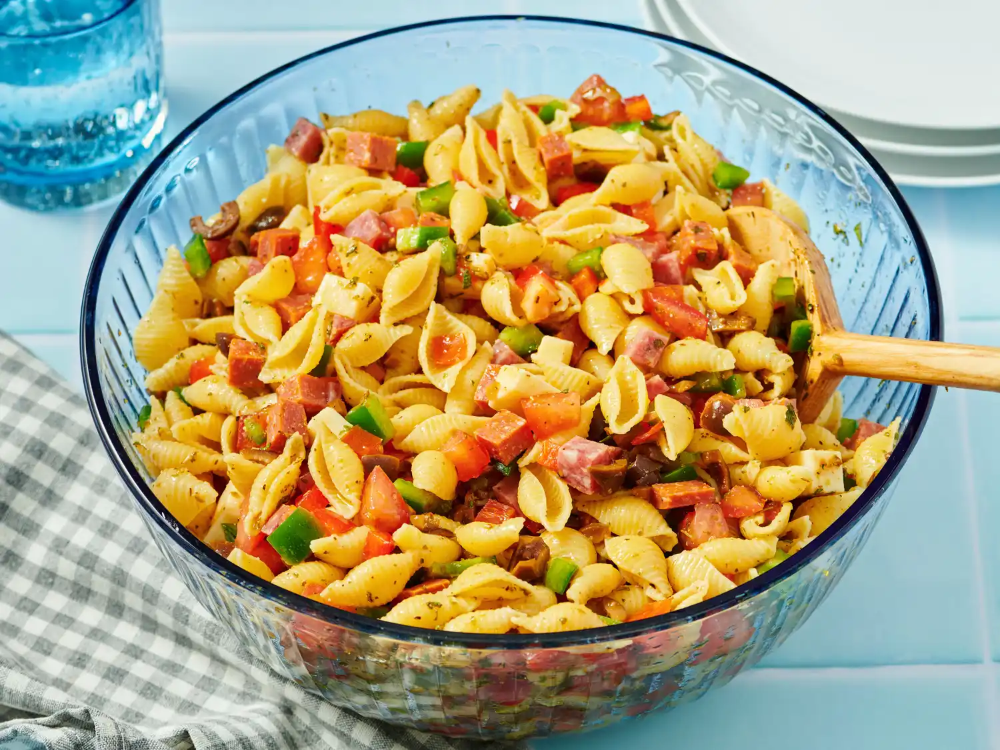

Antipasto Pasta Salad

Description
This antipasto pasta salad is a delicious combination of pasta, meat, and cheese with a homemade dressing. It serves a crowd and is great for a picnic.
Prep Time: 20 mins
Cook Time: 15 mins
Additional Time: 1 hr
Total Time: 1 hr 35 mins
Servings: 12
Ingredients
- 1 pound seashell pasta
- ½ pound Asiago cheese, diced
- ¼ pound Genoa salami, chopped
- ¼ pound pepperoni sausage, chopped
- 3 medium tomatoes, chopped
- 1 medium red bell pepper, diced
- 1 medium green bell pepper, chopped
- 1 (6 ounce) can black olives, drained and chopped
- 1 (.7 ounce) package dry Italian-style salad dressing mix
- ¾ cup extra virgin olive oil
- ¼ cup balsamic vinegar
- 2 tablespoons dried oregano
- 1 tablespoon dried parsley
- 1 tablespoon grated Parmesan cheese
- salt and ground black pepper to taste
Steps
- Gather all ingredients.
- Make the salad: Bring a large pot of salted water to a boil. Add shell pasta and cook, stirring occasionally, until tender yet firm to the bite, about 9 minutes. Drain, run under cold water to cool pasta, and drain again.
- Transfer drained pasta to a large bowl. Add Asiago, salami, pepperoni, tomatoes, bell peppers, and olives. Sprinkle dry dressing mix over top and stir until ingredients are thoroughly mixed. Cover and refrigerate for at least 1 hour.
- Make the dressing: Whisk oil, vinegar, oregano, parsley, Parmesan, salt, and pepper together in a small bowl. Cover and set aside until ready to serve.
- When ready to serve, pour dressing over chilled salad and mix until well combined.
Go Back to Home Page